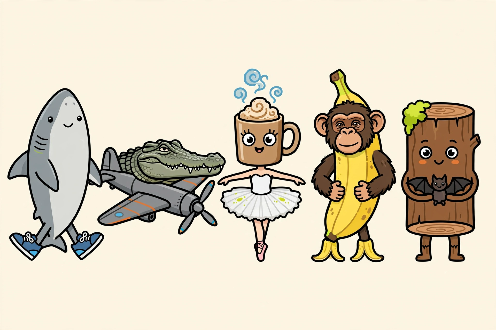
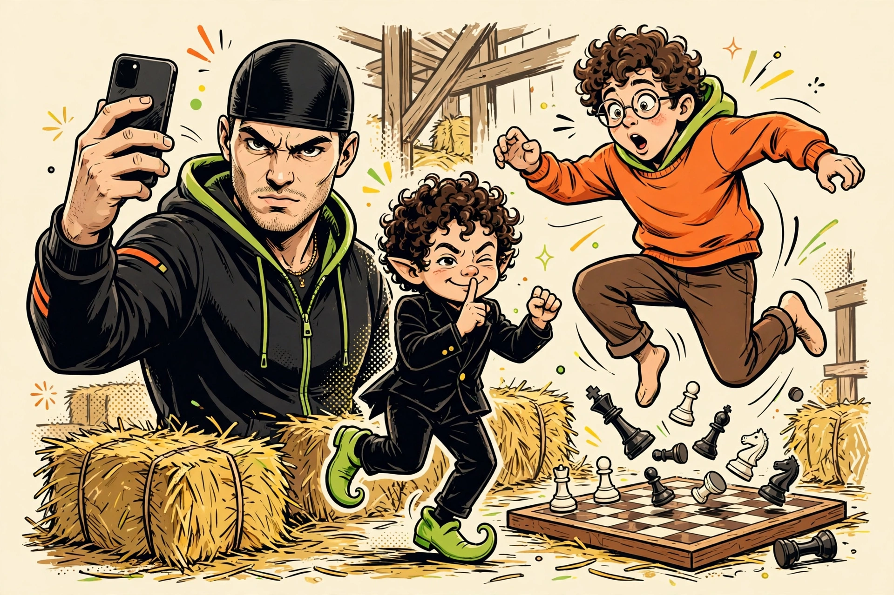
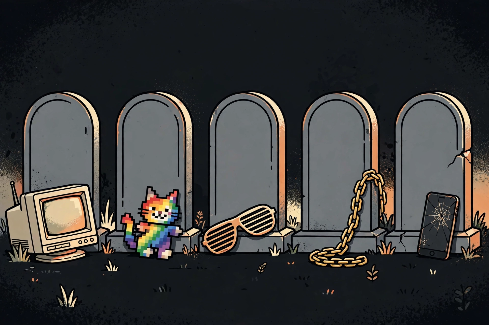

The Dictionary
Status matters: Current = say it sincerely. Ironic = only as a joke. Disputed = sources fight about it. Dead = graveyard energy, kept here so you recognise it.
Polysemy warning from the research: ts, pmo, pyo, od, bop, opp, tight, peak all have two live meanings. Context and tone decide — the card tells you both.
The Meme Catalogue
Every era: rage comics to Italian brainrot to this month's drops. Real template photos where they exist — the actual Distracted Boyfriend stock photo, the actual Kabosu Doge photo — illustrations only where a format is video-only or no real still could be verified.


THE GREAT MEME RESET OF 2026 — IT FAILED (IRONICALLY)
Reaction GIFs
The canon: the GIFs that actually get sent, ranked by the mood they're for. Every card is the real GIF, playing — each one was checked frame by frame before it earned a spot. Ranked lists triangulated from GIPHY's and Tenor's most-used charts (2019–2025).
How slang spreads & dies
Short-form video compressed a years-long cycle into weeks. One illustrative 2026 analysis put average time to “corporate death” at ~159 days — treat the number as directional, the pattern is confirmed everywhere.
Invented in a niche
Black American speech, ballroom, a Discord, a streamer chat, a region, a game. Not understanding it is part of the point.
Creator amplification
A rapper or streamer blows it up. Kai Cenat is the most-cited mint: rizz, gyatt, glazing, fanum tax.
Cross-platform migration
TikTok → Reels → X → Shorts → group chat → classroom. Each hop strips context — see gyatt & crash out.
Dictionary capture
Explainers + Word of the Year. Documentation that users read as a death certificate.
Brand / parent adoption
The corporate death curse. Once a brand or news anchor says it sincerely, in-group value collapses.
Irony, revival, or English
Dead terms live ironically, as nostalgia, or graduate to just… English. Lowkey, bruh, smh did that.
Origins & credit
A lot of “TikTok slang” is AAVE, Black queer ballroom, hip-hop, or London Multicultural English — relabelled after virality. This dictionary credits the origin, not just the TikTok date.
Contested use means: semantic loss, performance “blaccent” for clout, and credit erasure — while Black speakers face penalties for the same speech adopters profit from. Know Your Meme's TS PMO ICL entry frames the 2024–25 slang-overload wave in exactly those terms.
London MLE: mandem, peng, blud/bruv, innit, bare, ends, wasteman, safe, wagwan, creps, peak (unfortunate — opposite of US peak).
🪦 The Graveyard
Dead, dated, or ironic-only. Sincere use here marks you as out of touch. This is the only place some of these belong now.

Status: DEAD — community verdict, and this is its only home on this site. A deliberately meaningless chant (sometimes glossed “so-so / 6-or-7 out of 10”) with an alternating palms-up gesture. Origin: Skrilla's “Doot Doot (6 7)” (Dec 2024), LaMelo Ball (6'7") edits, the 67 Kid. Origin meaning is disputed and stays disputed: 67th St Philadelphia vs 67th St Chicago vs police 10-67 vs Skrilla himself: “I never put an actual meaning on it, and I still would not want to” (Complex, Oct 2025). Why dead: Dictionary.com 2025 Word of the Year, South Park lampoon, teacher bans, #1 on Lake Superior State's 2026 Banished Words list, USA Today (June 2026) calling it an outdated fad, brand adoption (Pizza Hut 67¢ wings, McDonald's/KFC/Domino's) — “the grown-ups have killed it.” Still being the most-searched term is not the same as sincere use. Note: 41 is NOT dead — it stays in the main dictionary as current ironic nonsense.
Ironic-only for older users; still a playground joke for Gen Alpha — borderline, flagged contested. The Skibidi Toilet format itself is in the catalogue; sincere “skibidi” as a compliment is not alive.
Ironic-only. “What the sigma?” and “only in Ohio” are 2023-era references now. Sincere sigma grindset is the joke target, not a personality.
Consensus dead 2010s. Plus turnt, totes, can't even, bye Felicia, ROFL, TTYL, phat, bling, crunk, fo' shizzle, adulting — all in the dictionary marked Dead so you can recognise them in the wild.
Dead/ironic. Lit was replaced by fire. Cheugy is now itself cheugy. F in chat and pwned survive only as retro gaming references.
2010s challenge formats, plus Longcat, Nyan Cat and rage comics as active memes — all revived only through 2026-is-the-new-2016 nostalgia. Grimace Shake, NPC Streaming and Girl Dinner (2023 peaks) are dated references now.
Disagreement preserved: bet, cap/no cap, rizz, slay, bussin' appear on BOTH “current 2026” and “dead 2026” lists. Brand guides retire them; origin communities and general glossaries still list them as current. The dictionary marks them Disputed for exactly that reason — don't let a brand guide overrule the community that made the word.
Read the room
Emoji & stacking have rules too.